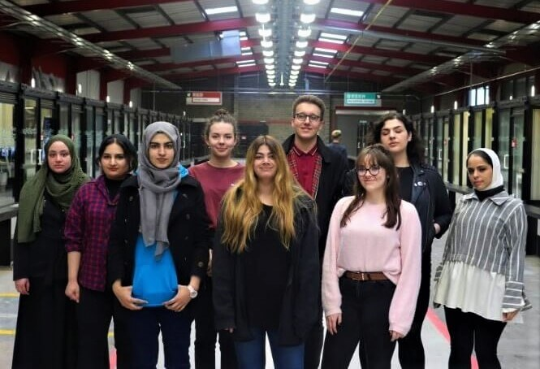

Profile
A highly competent, motivated and enthusiastic final year BSc (hons) Website development student working towards to achieve 2:1. Completed internship within creative digital sector during the enhanced term program organised by MMU university. My studies have provided me with a strong foundation in Web Development including understand of media making and creative digital sectors. I have four years of retail experience which has enabled me to develop strong customer service, approachable, communication skills and qualified me as a well organised, proactive in providing timely, efficient and accurate support to others. I am now seeking a graduate position with a well-established company so I can develop my skills and build a career in tech industry.
Academic Qualifications
Manchester Metropolitan University Current
2017 - 2020
BSC (Hons) Web Development Degree
Manchester College
2014 – 2017
GCSE Maths-English
BETC Level 3
Skills
Coding languages
HTML, CSS, JavaScript, PHP
Photoshop
Communication
Time Mangement
Teamwork
Experience
Third term Sharp future Placement:
The placement was offered as an option on the third term program set up for Manchester Met Students.
This project taken two weeks, the first week was based inside MMU which was all about learning and taking
information in about the companies and meeting the people from companies.

The second week was based in the Sharp Futures building, Sharp future gave us a chance to work on a
project in groups to prove our self and showcase our knowledge. It was a great opportunity as I had my
brain freshen up and brighten up With so many career paths to choose from, as students it’s not easy for us
to decide how and where to focus on the abilities. However, Sharp Futures Discover helped me to broaden horizons
and unlock potential for the creative digital workforce of tomorrow.
Work History
Team Spirit - Agency
Manchester Airport – World Duty Free
The Sharp project
SharpFutures POD (People On Demand) memeber
Sharpfuturs
Internaship
Read foundation
Call centre
Student Ambassador/Course Representative
- Help line to students
- Campus tour guide
- Multiple jobs/responsibilities
USC sports direct
Sales assistant
Responsibilities include:
- Serving and advising customers
- Taking payment
- Helping customers to find goods they want
- Handling phone calls
- Handling complaints or passing them on to a manager